1
Solicite o atendimento
Preencha o formulário de solicitação na plataforma Doctor8 com seus dados, sintomas e necessidades. Você receberá um número de protocolo.
Completar solicitaçãoConsulta médica e psicológica para quem enfrenta crise, desastre ou vulnerabilidade — em qualquer lugar. Organizado pela ACURABRASIL através da plataforma Doctor8.
Se houver profissionais online, o atendimento pode ser imediato; caso contrário, nossa equipe de triagem responde em até 24 horas.
A plataforma detecta automaticamente o idioma do seu navegador.
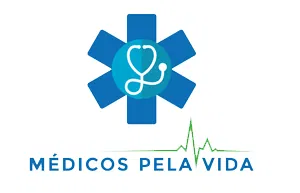
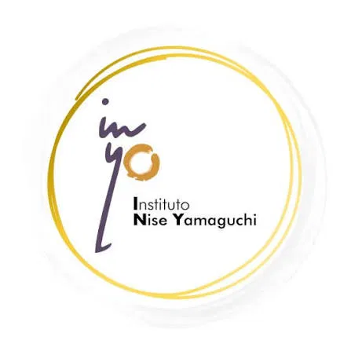
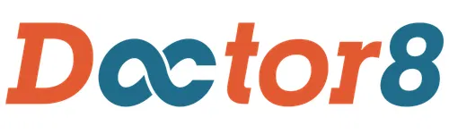
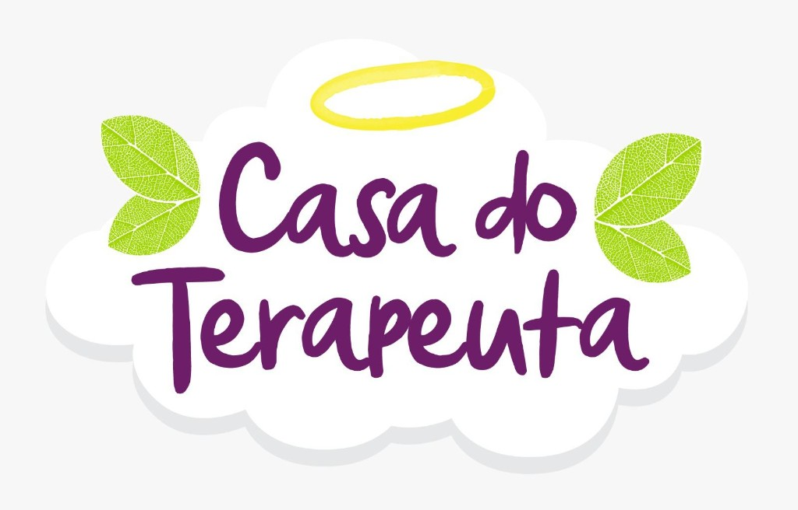
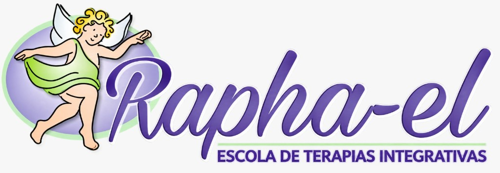
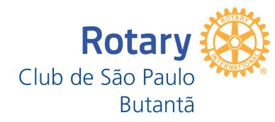
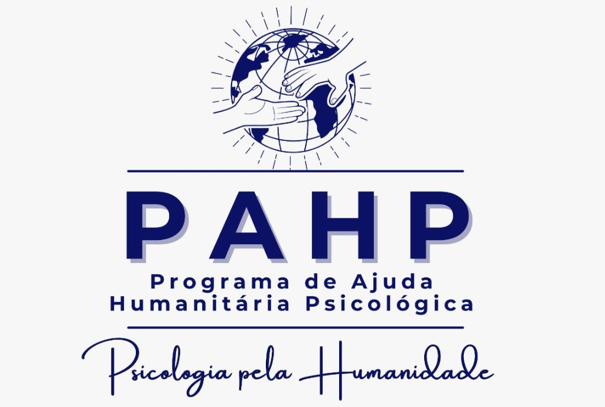
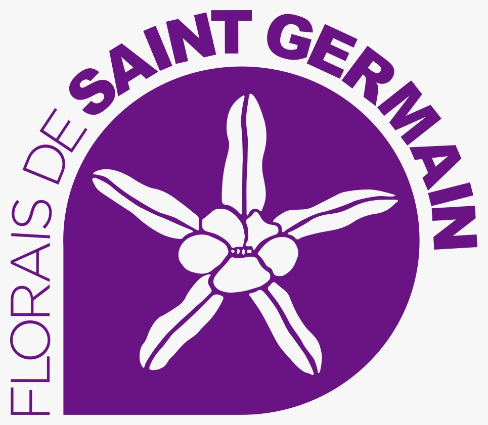
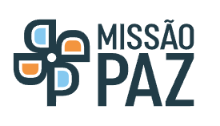
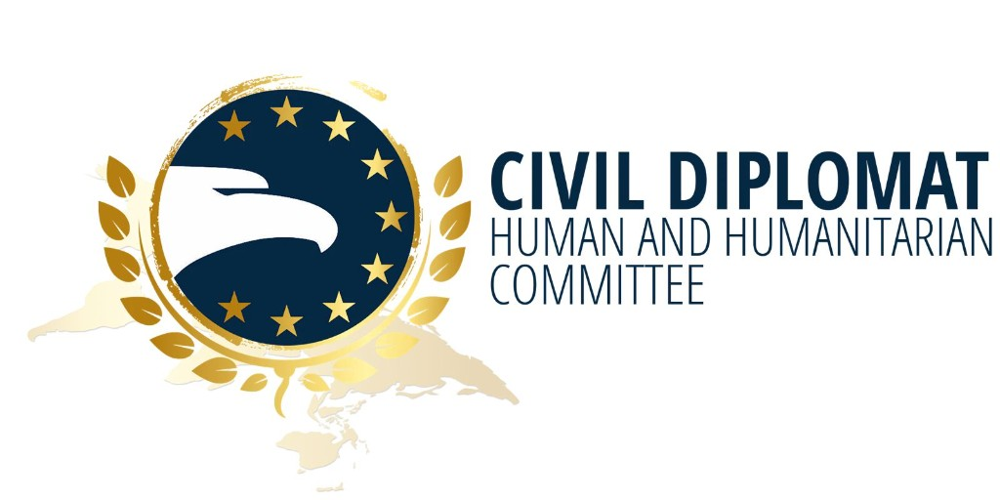
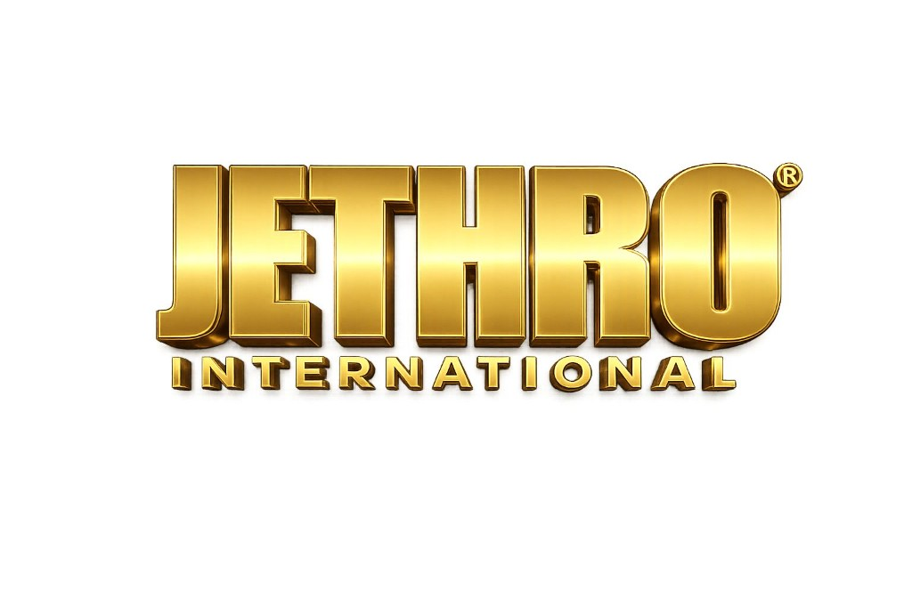
A ACURABRASIL oferece telemedicina humanitária em contextos de emergência e vulnerabilidade — não é uma clínica particular.
Três passos para receber atendimento gratuito na plataforma Doctor8.
Preencha o formulário de solicitação na plataforma Doctor8 com seus dados, sintomas e necessidades. Você receberá um número de protocolo.
Completar solicitaçãoRegistre-se como paciente no Doctor8 com seu nome, e-mail e senha. O processo leva menos de 2 minutos.
Criar conta grátisAcesse o portal de Atendimento Imediato ou entre na fila — consulta por videoconferência com profissionais voluntários da rede Acura.
Ir ao atendimento imediatoMédicos voluntários com registro ativo no CRM avaliam seus sintomas por videoconferência segura. Eles orientam sobre medicamentos e, quando aplicável no seu país, emitem documentos de orientação médica e encaminham para especialistas da rede. Procure um médico em caso de febre persistente, dor intensa, ferimentos, doenças crônicas descompensadas ou qualquer sintoma que preocupe. A consulta dura em média 20 a 40 minutos: o profissional fará perguntas, poderá pedir que mostre uma região afetada pela câmera e registrará tudo no prontuário seguro da plataforma Doctor8. Telemedicina não substitui emergências — em risco de vida, procure o serviço de urgência do seu país.
Solicitar atendimentoPsicólogos voluntários com registro ativo no CRP oferecem escuta acolhedora para momentos de angústia, medo, luto, insônia ou crises emocionais após uma emergência. A abordagem é prática e focada no alívio do sofrimento atual: técnicas de regulação emocional, orientação para lidar com o trauma e encaminhamento quando necessário. Procure um psicólogo se sentir ansiedade constante, pesadelos, irritabilidade, dificuldade para dormir ou se precisar conversar sobre o que viveu, sem julgamento. A sessão online acontece em ambiente reservado, por vídeo ou áudio, com sigilo profissional, e dura cerca de 50 minutos.
Solicitar atendimentoO psicanalista oferece um espaço de fala sem pressa, onde você pode elaborar experiências difíceis — perdas, traumas, conflitos — com escuta atenta e respeito ao seu tempo. Diferente do psicólogo clínico, que costuma usar técnicas estruturadas com objetivos definidos, o psicanalista prioriza compreender as raízes emocionais e simbólicas do que você sente, num processo que pode ser contínuo. Indicado para quem busca sentido após o luto ou deseja falar sobre memórias e padrões que se repetem na vida. O atendimento online mantém sigilo. Não é indicado para emergências psiquiátricas agudas — nesses casos, procure o serviço de urgência do seu país.
Solicitar atendimentoTerapeutas integrativos oferecem práticas reconhecidas pelo Ministério da Saúde do Brasil como complementares ao tratamento médico — como meditação guiada, aromaterapia, reiki e outras PICS (Práticas Integrativas e Complementares em Saúde). Eles nunca substituem o médico: atuam junto ao cuidado convencional para aliviar sintomas, reduzir o estresse e fortalecer o bem-estar. Procure esse apoio complementar para dor, ansiedade, insônia ou recuperação física e emocional, sempre informando o terapeuta sobre seus medicamentos e diagnósticos. A sessão online inclui orientações práticas que você pode aplicar em casa.
Solicitar atendimentoA mesma rede voluntária que atendeu na pandemia e no Rio Grande do Sul segue ativa — e aberta a novas frentes humanitárias.
Escuta e cuidado profissional por R$ 100 para quem atravessa um momento difícil.
Abrir a campanha →Orientação médica e escuta por R$ 100 para a saúde da mama.
Abrir a campanha →Atendimento gratuito para pessoas afetadas pelos terremotos e pela crise humanitária na Venezuela.
Solicitar atendimento gratuito →Modelo de telemedicina humanitária nas enchentes do Rio Grande do Sul — milhares de consultas voluntárias.
Ver o projeto RS →A origem da rede: profissionais voluntários conectados por telemedicina durante a pandemia.
Ver o atendimento pandemia →Sim. Este canal humanitário da ACURABRASIL conecta pessoas em situação de crise ou vulnerabilidade com profissionais voluntários. As consultas são 100% gratuitas. Somos uma associação humanitária sem fins lucrativos: você não paga nada em nenhum momento. Operações ativas incluem o SOS Venezuela.
Voluntários da ACURABRASIL podem ajudar. Escreva para contato@acurabrasil.org ou use o WhatsApp desta página.
Complete a solicitação e cadastre-se no Doctor8 para acessar a consulta por videoconferência.
Plataforma Doctor8 · Rede humanitária ACURABRASIL